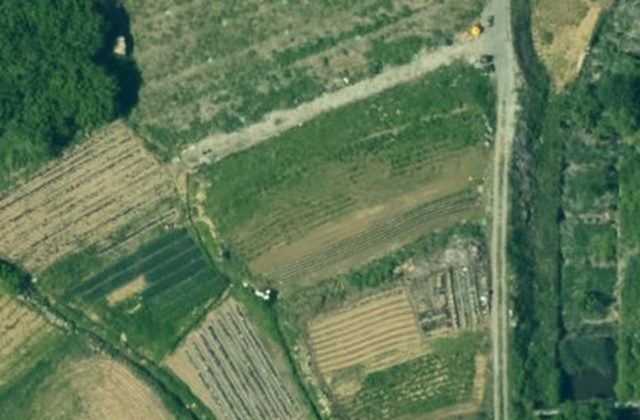

분석 의뢰
영상을 넣고 분석 카드를 고르면 LX가 분석해 드립니다. 비용은 없습니다.1영상 넣기영상 1장 준비됨 ✓
LX가 남원시에 공유한 영상

남원시 2023년 항공영상영농관리로 이미 분석한 영상

남원시 2020년 항공영상아직 분석하지 않은 영상
우리 영상 파일
파일을 끌어 놓거나 눌러 고르세요여러 장도 한 번에 넣을 수 있습니다

덕과면 일대 드론영상 · 1장2024년 7월에 찍은 영상입니다 — 분석할 수 있습니다 ✓
다른 영상으로
영상_0921.zip · 1개이 파일은 영상으로 읽지 못했습니다. 위치 정보가 없거나 다른 형식일 수 있습니다.
LX 담당자에게 보내 확인받기
2분석 카드 고르기영농관리 선택 ✓
 운영
운영영농관리 행정서비스
경작·비경작 · 비닐하우스 · 사료작물
첫 결과 전2023년 사업
생활환경 위험요소 탐지
방치쓰레기 · 불법소각장 · 방치폐가
첫 결과 전2026년 사업
도로 안전관리
이 영상으로는 어렵습니다 — 더 가까이 찍은 영상이 필요합니다
3요청하기메모는 선택
메모 한 줄 — 예: 덕과면 새 농지 확인용
분석 요청
LX 담당자가 확인한 뒤 분석합니다. 끝나면 알림으로 알려 드리고, 결과는 영농관리 서비스에 새 시점으로 쌓입니다.
어디를 분석하나
덕과면 일대 · 약 2㎢영상을 넣으면 어디를 찍은 것인지 여기에 보입니다
우리 시 밖은 분석하지 않습니다.
내가 보낸 요청2건
- 덕과면 드론영상 → 영농관리2026.10.01 보냄LX 확인 중
- 2023년 항공영상 → 영농관리2026.09.30 결과 도착결과 도착
전북특별자치도 남원시대표전화 063-620-6114AI 분석 · 모델 개발과 갱신 — LX 한국국토정보공사